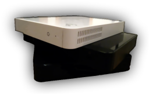
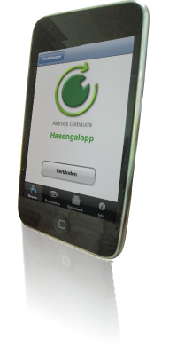

OpenRemote Boss™ 1.0
|
OpenRemote develops the Building Operating System Standard (Boss)™. OpenRemote Boss 1.0 lets you use iPhone and iPod Touch to remotely control devices, lights and audio/video systems at your home. OpenRemote Boss 1.0 supports Infrared, X10, KNX, TCP/IP, HTTP and Telnet as control protocols and can integrate device controls using these transports into scenes and macros. The user interfaces of OpenRemote Boss consoles and panels is completely customizable with easy to use, drag and drop online tools. You can start designing your iPhone control interface immediately with our online user interface designer tools.
|
|

OpenRemote Orb™

The OpenRemote Orb is a hardware reference implementation for deploying OpenRemote Boss. If you wish to start quickly and automate your home with OpenRemote Boss without any software installation, then OpenRemote Orb is for you.
OpenRemote Orb comes pre-installed with all necessary OpenRemote software. Just plug it in and you're ready to go!
We are currently measuring the interest in this OpenRemote hardware offering. If you're interested in purchasing an OpenRemote Orb then please let us know. Once we get enough interest we can start production.
We anticipate the price of OpenRemote Orb to be approximately US $349.
 |
I Am Interested in Purchasing OpenRemote Orb |
OpenRemote KNX 1.2.1

iPhone enable your KNX installation.
Command your KNX installation from your iPhone/iPod Touch with OpenRemote KNX. OpenRemote KNX is an iPhone application that will directly talk to your KNX IP gateway. This configuration does not require an ORB. All you need is the iPhone software and you can download it from the app-store for free.
OpenRemote KNX comes with a convenient self discovery feature. OpenRemote KNX will monitor traffic on your KNX bus and will thus capture the most commonly used commands. You can then map the commands to their respective icons, select the icons you want to see on your iPhone real-estate and voila, you have assembled yourself a geek-chic KNX touch panel.
Use OpenRemote KNX for free for up to 10 objects. You can purchase unlimited devices support for a fee. For professional KNX installers that want to bulk import their ETS data please contact us.
|
Download OpenRemote KNX Lite for FREE |
|
Buy OpenRemote KNX Full Version |
|
OpenRemote KNX Documentation |
iPhone, iPod Touch and iPad are trademarks of Apple, Inc.
{kind=link}
{kind=link}
{kind=link}